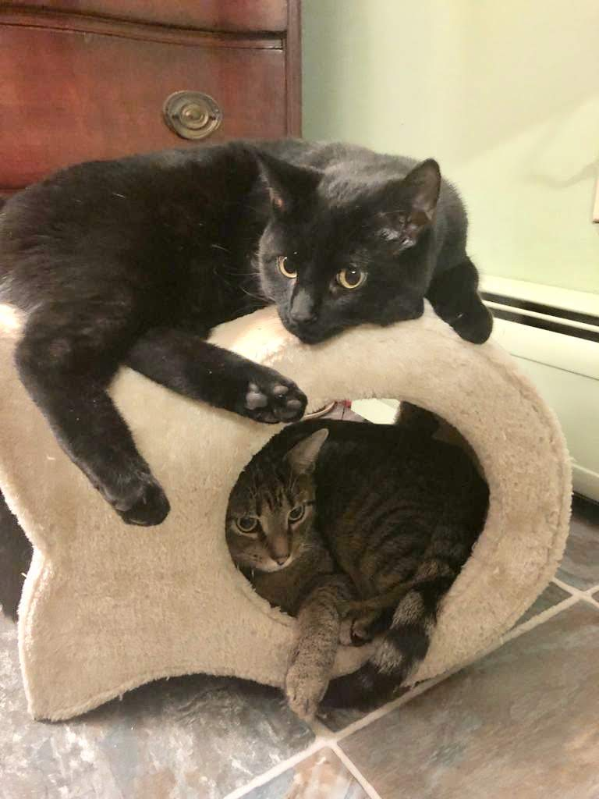
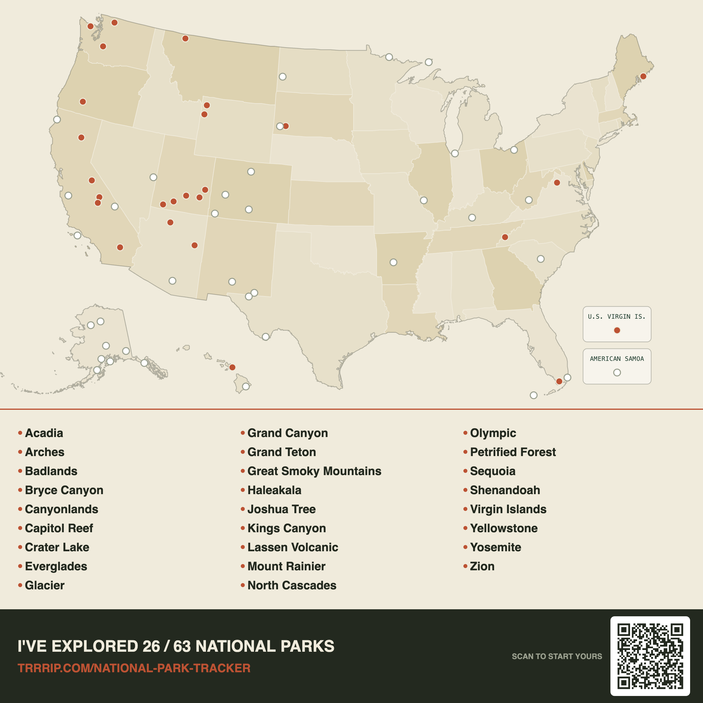

Sydney Olivia Shuster
Biophysical chemist and NSF Graduate Research Fellow

Biophysical chemist and NSF Graduate Research Fellow
Profile
I am a Ph.D. candidate in Biophysical Chemistry at Yale (expected 2027), with a research record spanning protein aggregation, vibrational imaging, and metabolism in mammalian and bacterial cells. I have experience with science advocacy, labor organzing, direct legislative engagement, and science writing.
Full research experience, policy and advocacy work, publications, and technical skills: download CV (PDF)
Personal
When not in the lab or organizing, I can often be found hiking, skiing, running, reading, or experimenting with vegan recipes. I also love to travel, especially to beautiful hiking locations, and have been to 26 National Parks so far! My husband and I have two mischievous cats, Gin & Tonic, pictured here.

26 / 63 national parks visited

Contact
Always up for chatting about science, unions, veganism, effective altruism, and biosecurity. Feel free to send me an email anytime.